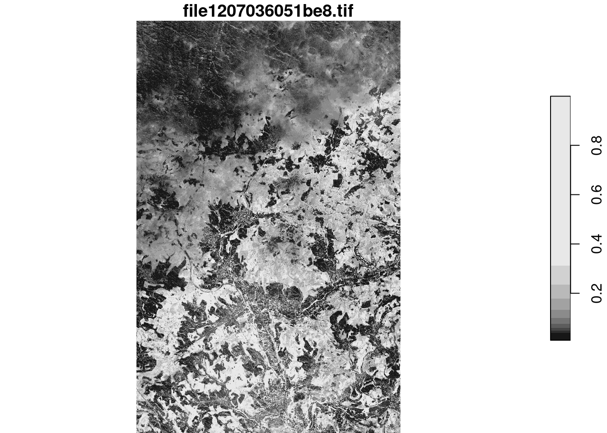
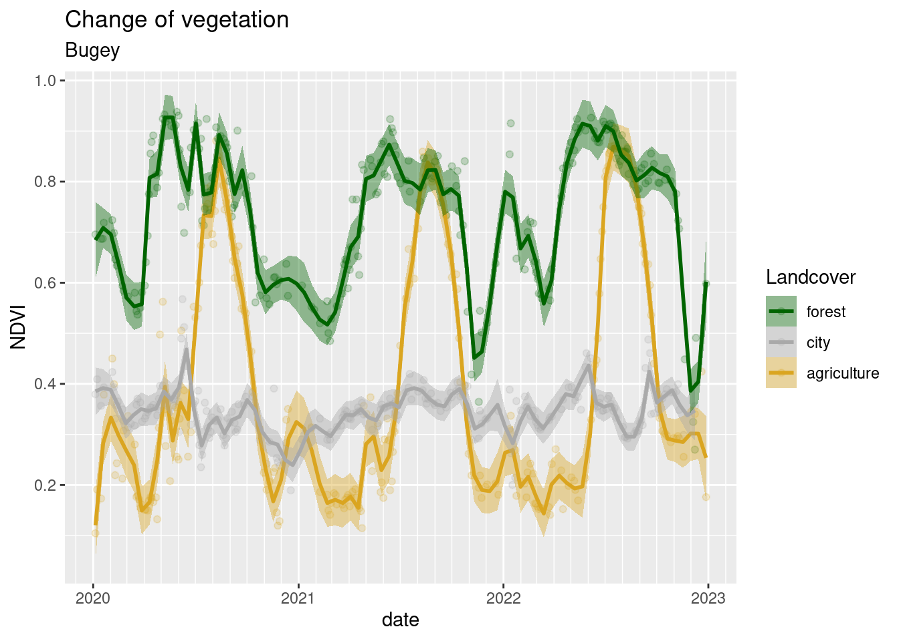
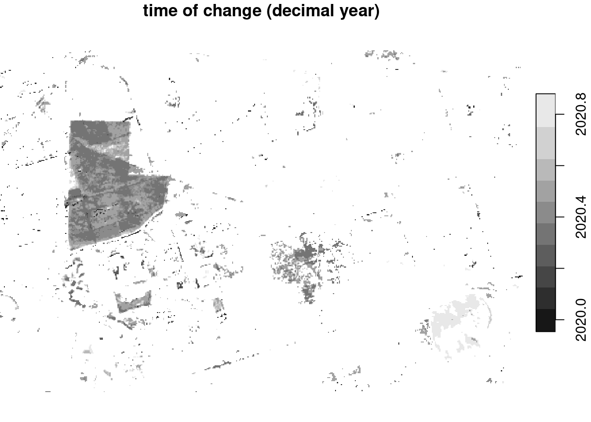
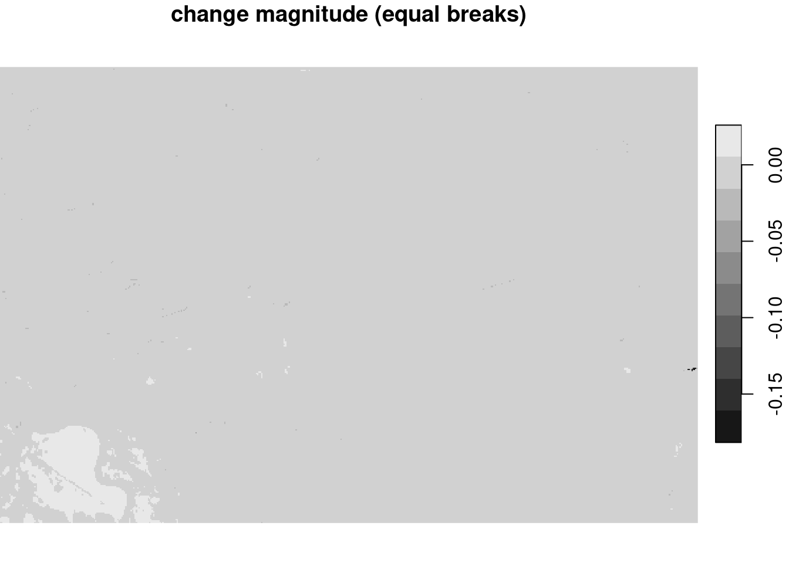
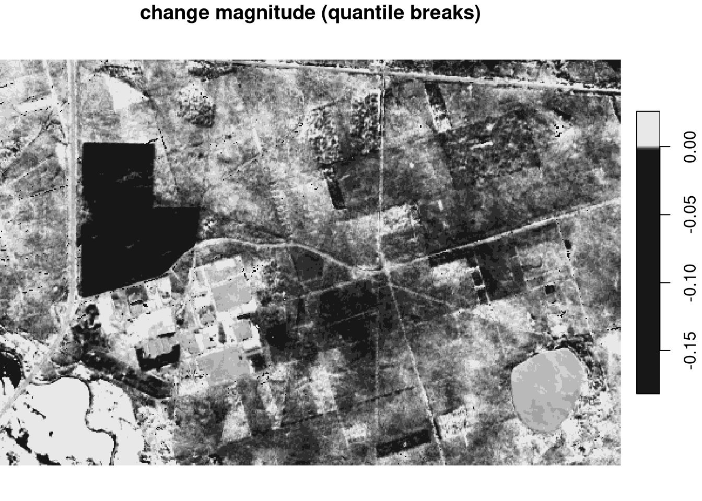

library(openeo)
con = connect("https://openeo.cloud")
# Login, see https://docs.openeo.cloud/getting-started/r/#authentication
login()Using an openEO back-end from R
openEO is an API
Well, yes, and along with that
- a software ecosystem with client and server implementations that makes it work,
- a number of large-scale, cloud-based deployments, both public and private
- a community of people working on it and using it
Where is it?
From https://openeo.org/, software, Specifications:
- openEO API: source code of the generic aspects: end points
- openEO processes: source code of all the processes that form a process graph
- link to the rendered Swagger docs
How does it work?
- Connecting to a server gives you the ability to query:
- image collections available
- processes supported
- file formats supported for output
- Given that info, one can iteratively build instructions: with image collection
x, select regionyand periodz, and do this, that and then that with it. This set of instructions is arbitrary complex. - After
login(), you can send a the set of instructions (“process graph”) to the server, and either- wait for an answer (synchronous)
- go for coffee, or lunch, or check impatiently whether the job has finished (asynchronous)
Examples
Example 1: using OpenEO Platform
From https://r.geocompx.org/gis.html?q=openeo#openeo
plots_json <- geojson_read("plots.geojson")User support platform: https://discuss.eodc.eu/c/openeo-platform/5
p = processes() # load available processes
collections = list_collections() # load available collections
formats = list_file_formats() # load available output formats
# Load Sentinel-2 collection
s2 = p$load_collection(
id = "SENTINEL2_L2A",
spatial_extent = list(
west = 7.9, east = 8.1,
north = 51.1, south = 50.9
),
temporal_extent = list("2021-01-01", "2021-01-31"),
bands = list("B04", "B08")
)
# Compute NDVI vegetation index
compute_ndvi = p$reduce_dimension(
data = s2, dimension = "bands",
reducer = function(data, context) {
(data[2] - data[1]) / (data[2] + data[1])
}
)
# Compute maximum over time
reduce_max = p$reduce_dimension(
data = compute_ndvi, dimension = "t",
reducer = function(x, y) {
max(x)
}
)
# Export as GeoTIFF
result = p$save_result(reduce_max, formats$output$GTiff)
# Execute processes
f = compute_result(graph = result, output_file = tempfile(fileext = ".tif"))
library(stars)Loading required package: abindLoading required package: sfLinking to GEOS 3.11.1, GDAL 3.6.4, PROJ 9.1.1; sf_use_s2() is TRUEread_stars(f) |> plot()
import openeo
#conect to backennd, uncomment to authenticate using oidc
connection = openeo.connect("openeo.cloud")#.authenticate_oidc()
# Get all collection ids
print(connection.list_collection_ids())
# print all processes
#print(connection.list_processes())
# Load Sentinel-2 collection
datacube = connection.load_collection(
"SENTINEL2_L2A",
spatial_extent={"west": 7.5, "south": 50.1, "east": 7.7, "north": 50.3},
temporal_extent=["2021-01-01", "2021-01-31"],
bands=["B04", "B08"]
)
# Compute NDVI vegetation index
#datacube = datacube.ndvi(nir = "B08", red = "B04", target_band = "NDVI")
datacube = datacube.process(
process_id="ndvi",
arguments={
"data": datacube,
"nir": "B08",
"red": "B04"}
)
# Compute maximum over time
datacube = datacube.reduce_dimension(
reducer="max",
dimension = "t"
)
# Export as GeoTIFF
result = datacube.save_result("GTiff")
# login:
connection.authenticate_oidc()
# Execute processes
# Creating a new job at the back-end by sending the datacube information.
job = result.create_job()
# Starts the job and waits until it finished to download the result.
job.start_and_wait()
job.get_results().download_files(".")A larger example, using Copernicus Data Space Ecosystem
From: https://r.iresmi.net/posts/2023/copernicus_openeo_ndvi_time_series/
library(openeo)
library(signal)
Attaching package: 'signal'The following objects are masked from 'package:stats':
filter, polylibrary(tidyverse)── Attaching core tidyverse packages ──────────────────────── tidyverse 2.0.0 ──
✔ dplyr 1.1.2 ✔ readr 2.1.4
✔ forcats 1.0.0 ✔ stringr 1.5.0
✔ ggplot2 3.4.2 ✔ tibble 3.2.1.9005
✔ lubridate 1.9.2 ✔ tidyr 1.3.0
✔ purrr 1.0.1 ── Conflicts ────────────────────────────────────────── tidyverse_conflicts() ──
✖ dplyr::filter() masks signal::filter(), stats::filter()
✖ dplyr::lag() masks stats::lag()
ℹ Use the conflicted package (<http://conflicted.r-lib.org/>) to force all conflicts to become errorslibrary(sf)
library(geojsonio)The legacy packages maptools, rgdal, and rgeos, underpinning the sp package,
which was just loaded, will retire in October 2023.
Please refer to R-spatial evolution reports for details, especially
https://r-spatial.org/r/2023/05/15/evolution4.html.
It may be desirable to make the sf package available;
package maintainers should consider adding sf to Suggests:.
The sp package is now running under evolution status 2
(status 2 uses the sf package in place of rgdal)
Registered S3 method overwritten by 'geojsonsf':
method from
print.geojson geojson
Attaching package: 'geojsonio'
The following object is masked from 'package:base':
prettylibrary(janitor)
Attaching package: 'janitor'
The following objects are masked from 'package:stats':
chisq.test, fisher.testlibrary(fs)# 3 sample plots with field `landcover`: "agriculture", "forest", "city"
if (file_exists("plots.geojson")) file_delete("plots.geojson")
plots <- read_sf("plots.gpkg", layer = "plots") |>
write_sf("plots.geojson")
plots_json <- geojson_read("plots.geojson")
# temporal span (start - end)
date_span <- c("2020-01-01", "2022-12-31")
# Area name (for the final graphic plot)
location <- "Bugey"cnx <- connect(host = "https://openeo.dataspace.copernicus.eu")
# Your console will require you to paste a code and your browser will ask to
# grant access
login()list_collections()
describe_collection("SENTINEL2_L2A")
# List of available openEO processes with full metadata
processes <- list_processes()
# List of available openEO processes by identifiers (string)
print(names(processes))
process_viewer(processes)
# print metadata of the process with ID "load_collection"
print(processes$load_collection)
# get the formats
formats <- list_file_formats()# get the collection list to get easier access to the collection ids,
# via auto completion
collections <- list_collections()
# get the process collection to use the predefined processes of the back-end
p <- processes()
# compute NDVI
ndvi <- function(data, context) {
red <- data[1]
nir <- data[2]
(nir - red) / (nir + red)
}
# remove pixels not classified as vegetation (4) or non-vegetation (5), i.e.:
# water, shadows, clouds, unclassified...
filter_unusable <- function(data, context) {
scl <- data[3]
!(scl == 4 | scl == 5)
}
# check processing status
status_job <- function(job) {
while (TRUE) {
if (!exists("started_at")) {
started_at <- ymd_hms(job$created, tz = "UTC")
message(capabilities()$title, "\n",
"Job « ", job$description, " », ",
"started on ",
format(started_at, tz = Sys.timezone(), usetz = TRUE), "\n")
}
current_status <- status(job)
if (current_status == "finished") {
message(current_status)
break
}
current_duration <- seconds_to_period(difftime(Sys.time(),
started_at,
units = "secs"))
message(sprintf("%02d:%02d:%02d",
current_duration@hour,
minute(current_duration),
floor(second(current_duration))), " ",
current_status, "...")
Sys.sleep(30)
}
}s2_dataset <- p$load_collection(id = collections$SENTINEL2_L2A,
temporal_extent = date_span,
bands = c("B04", "B08", "SCL"))
mask <- p$reduce_dimension(data = s2_dataset,
dimension = "bands",
reducer = filter_unusable)
result <- s2_dataset |>
p$mask(mask) |>
p$reduce_dimension(dimension = "bands",
reducer = ndvi) |>
p$aggregate_spatial(geometries = plots_json,
reducer = mean) |>
p$save_result(format = "CSV")job <- create_job(graph = result,
title = "NDVI",
description = "NDVI plots")
start_job(job)
# list_jobs()
status_job(job)
# logs(job)
f <- download_results(job = job, folder = "results")
ndvi_data <- read_csv(f[[1]]) |> clean_names()ndvi_data <- read_csv("results/timeseries.csv") |> clean_names()Rows: 842 Columns: 3
── Column specification ────────────────────────────────────────────────────────
Delimiter: ","
dbl (2): feature_index, avg(band_0)
dttm (1): date
ℹ Use `spec()` to retrieve the full column specification for this data.
ℹ Specify the column types or set `show_col_types = FALSE` to quiet this message.# filtering (optional)
ndvi_filtered <- ndvi_data |>
arrange(feature_index, date) |>
drop_na(avg_band_0) |>
group_by(feature_index) |>
mutate(ndvi = sgolayfilt(avg_band_0, n = 5)) |>
ungroup()
# plot
landcover_colors <- list("agriculture" = "goldenrod",
"forest" = "darkgreen",
"city" = "darkgrey" )
ndvi_filtered |>
full_join(plots |>
st_drop_geometry() |>
mutate(feature_index = row_number() - 1)) |>
ggplot(aes(date, ndvi,
group = landcover,
color = landcover,
fill = landcover)) +
geom_point(alpha = 0.2) +
geom_smooth(span = 0.05) +
scale_x_datetime(date_breaks = "year",
date_minor_breaks = "month",
date_labels = "%Y") +
scale_y_continuous(breaks = scales::breaks_pretty()) +
scale_color_manual(values = landcover_colors) +
scale_fill_manual(values = landcover_colors) +
guides(color = guide_legend(reverse = TRUE),
fill = guide_legend(reverse = TRUE)) +
labs(title = "Change of vegetation",
subtitle = location,
y = "NDVI",
color = "Landcover",
fill = "Landcover")Joining with `by = join_by(feature_index)`
`geom_smooth()` using method = 'loess' and formula = 'y ~ x'Warning in simpleLoess(y, x, w, span, degree = degree, parametric = parametric,
: k-d tree limited by memory. ncmax= 246Warning in predLoess(object$y, object$x, newx = if (is.null(newdata)) object$x
else if (is.data.frame(newdata))
as.matrix(model.frame(delete.response(terms(object)), : k-d tree limited by
memory. ncmax= 246Warning in simpleLoess(y, x, w, span, degree = degree, parametric = parametric,
: k-d tree limited by memory. ncmax= 227Warning in predLoess(object$y, object$x, newx = if (is.null(newdata)) object$x
else if (is.data.frame(newdata))
as.matrix(model.frame(delete.response(terms(object)), : k-d tree limited by
memory. ncmax= 227Warning in simpleLoess(y, x, w, span, degree = degree, parametric = parametric,
: k-d tree limited by memory. ncmax= 233Warning in predLoess(object$y, object$x, newx = if (is.null(newdata)) object$x
else if (is.data.frame(newdata))
as.matrix(model.frame(delete.response(terms(object)), : k-d tree limited by
memory. ncmax= 233
ggsave("results/ndvi.png")Saving 7 x 5 in image
`geom_smooth()` using method = 'loess' and formula = 'y ~ x'Warning in simpleLoess(y, x, w, span, degree = degree, parametric = parametric,
: k-d tree limited by memory. ncmax= 246Warning in predLoess(object$y, object$x, newx = if (is.null(newdata)) object$x
else if (is.data.frame(newdata))
as.matrix(model.frame(delete.response(terms(object)), : k-d tree limited by
memory. ncmax= 246Warning in simpleLoess(y, x, w, span, degree = degree, parametric = parametric,
: k-d tree limited by memory. ncmax= 227Warning in predLoess(object$y, object$x, newx = if (is.null(newdata)) object$x
else if (is.data.frame(newdata))
as.matrix(model.frame(delete.response(terms(object)), : k-d tree limited by
memory. ncmax= 227Warning in simpleLoess(y, x, w, span, degree = degree, parametric = parametric,
: k-d tree limited by memory. ncmax= 233Warning in predLoess(object$y, object$x, newx = if (is.null(newdata)) object$x
else if (is.data.frame(newdata))
as.matrix(model.frame(delete.response(terms(object)), : k-d tree limited by
memory. ncmax= 233Third example, using Brian’s openEO back end, self-hosted at AWS
The following example is taken from Brian Pondi, https://github.com/PondiB/openeocubes
library(openeo)
# connect to the back-end when deployed locally
# con = connect("http://localhost:8000")
# connect to the back-end when deployed on aws
con = connect("http://35.89.54.201:8000")Connected to service: http://35.89.54.201:8000
Please check the terms of service (terms_of_service()) and the privacy policy (privacy_policy()). By further usage of this service, you acknowledge and agree to those terms and policies.Warning: Connected host is not production-ready. Unexpected errors might occur.# basic login with default params
login(user = "user", password = "password")Login successful.# get the collection list
collections = list_collections()
# to check description of a collection
collections$`sentinel-s2-l2a-cogs`$description[1] "Sentinel-2a and Sentinel-2b imagery, processed to Level 2A (Surface Reflectance) and converted to Cloud-Optimized GeoTIFFs."# Check that required processes are available.
processes = list_processes()
# to check specific process e.g. filter_bands
if (interactive()) {
describe_process(processes$filter_bands)
}
# get the process collection to use the predefined processes of the back-end
p = processes()
# load the initial data collection and limit the amount of data loaded
datacube_init = p$load_collection(id = "sentinel-s2-l2a-cogs",
spatial_extent = list(west=416812.2,
south=5803577.5,
east=422094.8,
north=5807036.1),
temporal_extent = c("2016-01-01", "2020-12-31"),
# extra optional args for datacubes regularization -> courtesy of gdalcubes
pixels_size = 10,
time_aggregation = "P1M",
crs = 32633)
# filter the data cube for the desired bands
datacube_filtered = p$filter_bands(data = datacube_init, bands = c("B04", "B08"))
# bfast custom change detection method (UDF - user-defined function, here in R):
change.detection = 'function(x) {
knr <- exp(-((x["B08",]/10000)-(x["B04",]/10000))^2/(2))
kndvi <- (1-knr) / (1+knr)
if (all(is.na(kndvi))) {
return(c(NA,NA))
}
kndvi_ts = ts(kndvi, start = c(2016, 1), frequency = 12)
library(bfast)
tryCatch({
result = bfastmonitor(kndvi_ts, start = c(2020,1), level = 0.01)
return(c(result$breakpoint, result$magnitude))
}, error = function(x) {
return(c(NA,NA))
})
}'
# run udf
datacube_udf = p$run_udf(data = datacube_filtered, udf = change.detection, names = c("change_date", "change_magnitude"))
# supported formats
formats = list_file_formats()
# save as GeoTiff or NetCDF
result = p$save_result(data = datacube_udf, format = formats$output$NetCDF)
# Process and download data synchronously
start.time <- Sys.time()
compute_result(graph = result, output_file = "change_detection.nc")[1] "change_detection.nc"end.time <- Sys.time()
time.taken <- end.time - start.time
time.takenTime difference of 4.399206 minsprint("End of processes")[1] "End of processes"show:
library(stars)
#r = read_mdim("change_detection.nc", proxy = TRUE)
r = read_stars('NETCDF:"change_detection.nc":change_date')
plot(r, breaks = "equal", main = "time of change (decimal year)")
m = read_stars('NETCDF:"change_detection.nc":change_magnitude')
plot(m, breaks = "equal", main = "change magnitude (equal breaks)")
plot(m, main = "change magnitude (quantile breaks)")